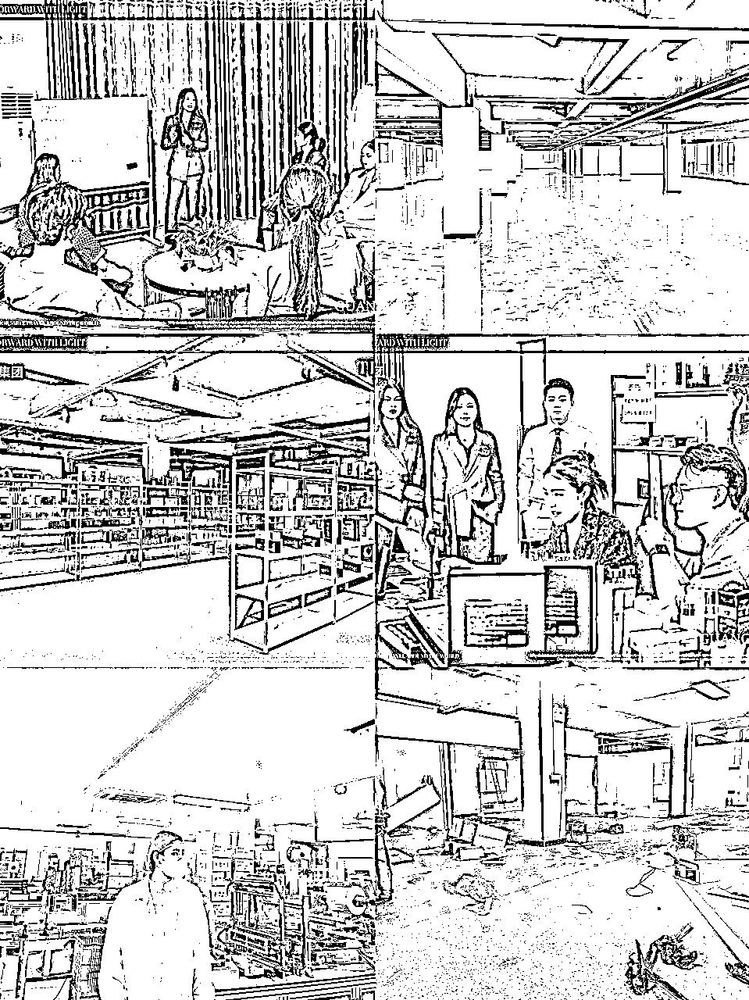

来源：https://fziji6736b.feishu.cn/docx/MQgOdd9cfooHtVxh90icUMPOnIh
嗨，我是瑜大，一个00后女孩做互联网也6年多了。18年17岁运营微商品牌起过万人团队自己也创立了微商品牌自己做品牌出货，2020年疫情放弃985学历大学辍学出来创立直播公司21年-22年在广州运营了一家5000平方直播基地。到今年创业失败重新起盘达到闲鱼收益一个月20万左右（以上经历无任何夸大色彩全部个人经历）多人都说我的22岁活那么精彩大起大落，所以人生的每一个苦难与挫折我都以积极心态面对 ！
（以上仅代表个人想法如有雷同勿喷尊重每一个人都有每一个人奋斗的信念）
1:从18年开始我就不断带领微商万人团队无数城市一边读高中一边出差培训交付讲课 ，每一个人都会唾弃微商我们不可否认的是当你做了直播带货，与电商大部分玩的套路都是微商玩剩下的我很感恩那几年的快速成长让我收获了（1:灵敏的商业嗅觉2：灵活性的团队管理及公司运营能力3:第一波原始300万的资金沉淀）
我的互联网创业收获：20岁我就在广东买了第一套房子一共下来160万，也给家人买了一套店铺在老家大概30万左右，从16岁开始从没有向家里拿过任何一分钱每一个月定期给父母打钱反哺总没有记反正赚钱想起来就打

2:在2021-2022年在广州运营了5000平直播带货公司直播的成绩今天就不谈了最后还是亏了出去让我获得最大的成长经验是（人永远不要赚认知之外的钱，在认知没有跟上前不要去敲资本的杠杆）我们是做最早一批视频号护肤账号的ip人从刚开始19.9，29.9，39.9的低可客做起（我们最大的错误是认知没有跟上，应该利用这个纯第一波流量拉高卖价赚更多利润2:及时对接上私域后端这些都是我后来失败总结的经验导致钱送你嘴巴里了你不知道如何大口吃）

今年视频号高客单我也一直在做，这里就不分享了 需要条件太严苛
它需要成熟的主播及资金资本及后端承接能力才能运转起来的盘需要储备资金500-1000万一个月保底一个号

3:通过直播带货也实现了自己18岁的梦想虽然目标很小，以00后的我来说我很满足了
特别注意：很多圈友看到这里会认为我的直播赚钱心里按不住自己的激动也埋头干先不着急把我以下文章看完你再选择（当然也不是说直播不好我想输出的观点是👇）
两年的直播我自己静下心来思考我发现我损失的东西是这些钱衡量不来的
1:我损失了我的身体我才20出头的年纪每一个月几乎都要跑医院我的心脏我的免疫力我的胃都出现了很大问题（心脏是：每天直播凌晨2点睡早上五点又要忍痛起来继续撕心裂肺直播 当我一直觉得我很年轻我敢拼敢搏身体的闹铃让我警醒！一张一张的检测报告，一次一次的扎针治疗 异乡一个人扎针一边处理工作写脚本运营账号白天起床就去医院治疗傍晚就赶回公司直播凌晨还在管理团队我的身体调了一年还不见好赚到的收益根本抵不上身体的损伤 无数的夜晚我在哭泣不敢告诉父母自己生病也不敢告诉公司小伙伴们怕影响军心一个人扛着所有慢慢挺到23年2月份我衡量了直播收益及投入产出根本跟不上我的有效精力产出 我选择抛盘养身体之外也算创业选择赛道失败我要面临重新开始（总下来直播还亏了200多个）
确实让我三月份投影仪收益4万，四月份开始扩张2-3个账号做到手纯利10万，五月份投影仪货盘+我快速复制团队做总达收益17万我开始复制公司请人去做六月份我开了第一家公司做新的货盘通过了投影仪让我继续深入这条赛道到九月份我换了3家场地公司规模继续请人扩大
赛道定江山我的数据没有花任何一笔钱去推广是选品非常重要
（如何说明：从抖音小店搬运无货源再到红书打击无货源足以证明这条路我们行不通 我们一定要顺应时代发展趋势并不是逆着时代去发展）
（我不会去做的品方向是哪些：比如小家电利润几块钱-几十块钱不够我塞牙缝，或者风扇空调客单价反正在200-300以下的红海市场。
为什么我不会去做：1：利润想快速达到量级快速起来赛道一定不要选错否则就是白用功这是我在直播吃亏的到的经验2:竞争压力大 这个问题不仅涉及到利润减少了 竞争压力大了 闲鱼流量就这么多 意味着分给你的客户都少了 客户过来本来都不能百分百成交 更何况更难的是客户本来就少这是一条小路！）
我会选择的品是属于目前大众需求并觉得很贵的东西（圈友们都不用着急，我会分享我的选品逻辑出来 学会这个逻辑你也可以快速起来）
取得结果：三月份投影仪收益4万，四月份开始扩张2-3个账号做到手纯利0万，五月份投影仪货盘+我快速复制团队做总达收益17万我开始复制公司请人去做
以上我都详细备注了我选品的原因和思路底层（虽然非常啰嗦 我是想让正在迷茫的圈友更加细致的知道方向 我是淋过雨过来的我现在有伞了 我也想让更多的圈友们少淋雨少走弯路 一切都是我6年来互联网综合成长思维分享）
（圈友们好好悟一下这句话，不管在这个平台还是你加了很多社群是不是每一个人的项目都感觉很赚钱 ，项目很多你无从下手感觉什么都想试一下？）
这是我这两年直播基地亏200万的大坑，我直播基地电商也做（多多 闲鱼 淘宝）直播也做（视频号，抖音，快手无人直播）项目太多了最后导致没有一个可以做的非常好 千万不要捡了芝麻丢了西瓜！人的经历是有限度的要找到合适自己赚钱的去深耕 闲鱼我能拼出成绩是我在众多里面选一条出路深扎所以产生了结果
我的视频号直播一直是我引以为豪的结果随便瓢就是几百万一千万一个月，但我能产生这个结果我需要付出百分百努力才可能获得 ，但我目前的这半年的电商成绩是我直播一天8小时之外额外做的产生的成绩总花我的精力才40%左右 每一个人的精力是有限的 在直播赛道我拼尽全力也就这样但电商才刚刚开始而且非常非常稳 这种钱是我这么多年互联网来我自己能感受到的稳 直播和微商赚过来的就慢慢感觉会失去不过我自己也印证了 我的人生大起大落失去的钱很多都是直播及微商赚到的钱 我不宣传谁好我只想我的例子分享给圈友们找到自己轻松赚钱的赛道很重要 今年我的身体又回到最初年轻的我也不用疲惫 投入产出比很好
真的非常感恩生财让我与大家相聚，这是我第一次在平台分享可能说的很多话很现实很直接但这些都是我这几年失败的经验。也感谢生财的圈子提供了这么多的精华帖，每一篇都能从中学到很多，让我更加坚定互联网这条路能一直走下去。我也会更加努力，给大家带来更多干货分享！
同时也欢迎同在做电商的小伙伴们一起交流 我们一起进步一起学习！一定知无不言 ！